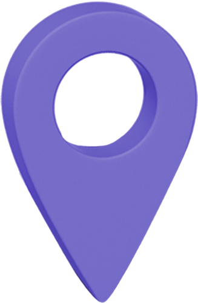
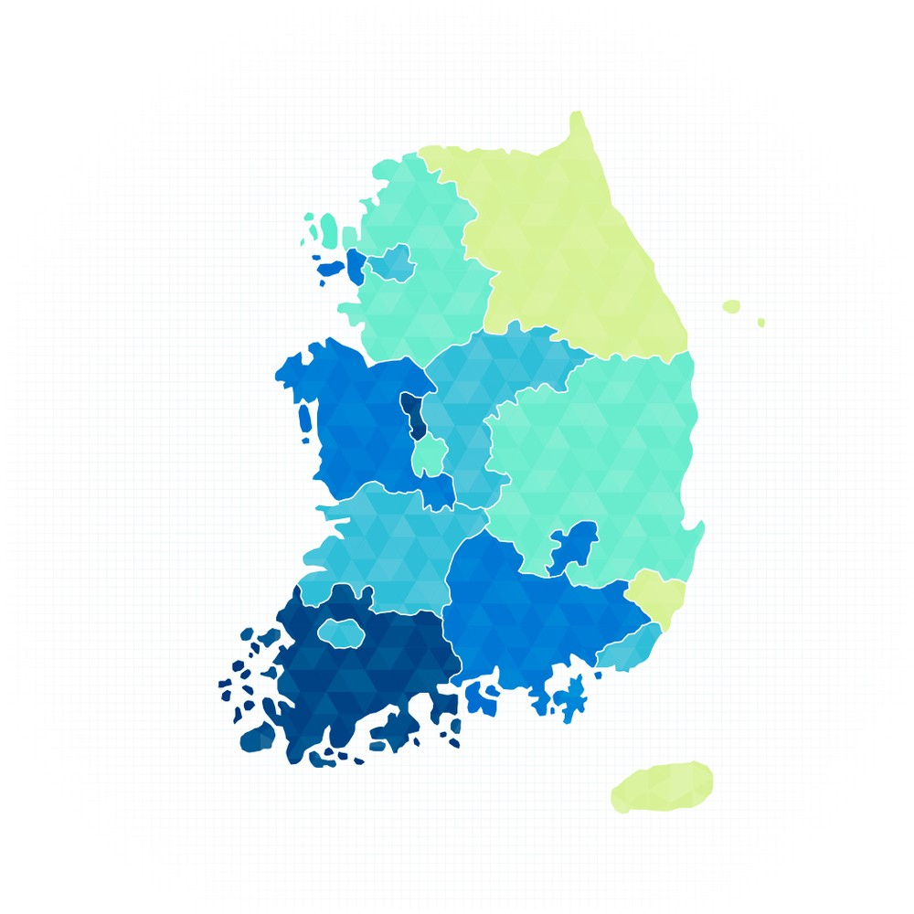
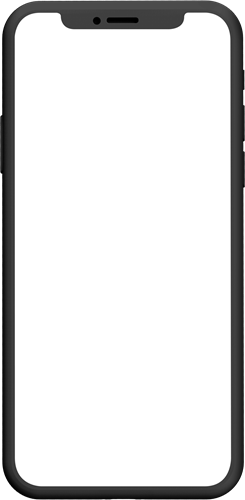
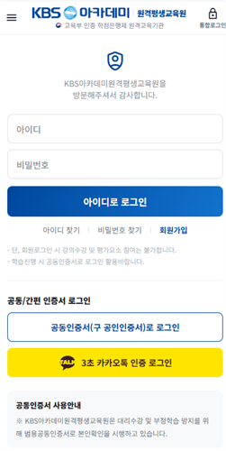
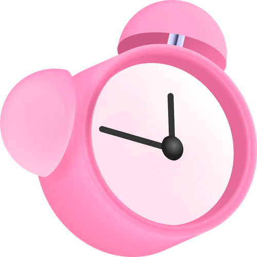
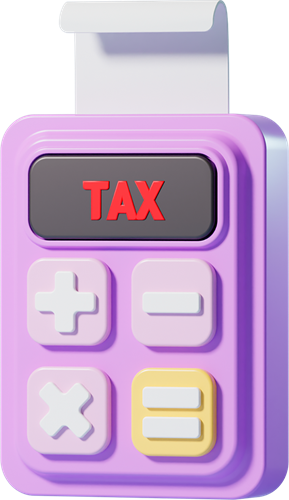
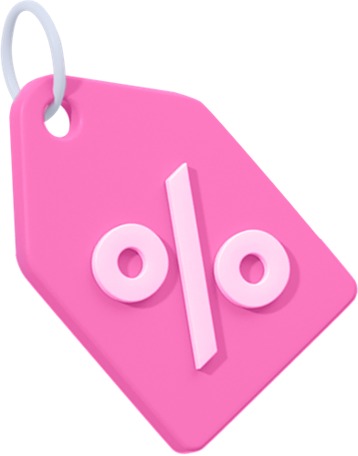

사용가능기관
support_agent
학자금 대출지원 가능기관

국가보훈처 학습비지원기관

입학상담문의
1661-6723
학습지원센터
1661-6726

2026년 2학기 13기수 · 09월 28일 개강반 · 선착순 모집 중
수강신청 마감까지
0
7
day
2
3
:
5
9
:
5
9


2026년
교육부
평가인정

사회복지사 과정 누적 학습자 1만 4,000명의 선택
사회복지사 2급
교육원 이동 없이 올인원 취득과정
뭘 좋아할지 몰라 다~ 준비했어요!
최대 혜택 · 최단기 · 매월 실습개강 · 전국단위 모집 · 결국 돌고돌아 선택은 KBS아카데미
최대 혜택 · 최단기 · 매월 실습개강 · 전국단위 모집 · 결국 돌고돌아 선택은 KBS아카데미
취득기간
최단기설계
필수 이수
17과목
현장실습
120·160시간
자격 구분
국가공인자격증
모집기간
매달 개강
안녕하세요! 친절함의 차원이 다른 KBS아카데미원격평생교육원 방문을 진심으로 환영합니다.
사회복지사2급 검색해보셨죠?
저희도 세어봤는데 교육원이 끝이 없더라고요
저희도 세어봤는데 교육원이 끝이 없더라고요
어디가 나은지 고르기도 힘든데, 사실 더 먼저 볼 게 있어요. 학점은행제는 생각보다 촘촘하게 만든 제도랍니다.
warning
국가평생교육진흥원이 정한 규정, 하나만 어긋나도 6개월이 밀려요
연 42학점 · 학기 24학점
1년에 42학점, 한 학기에 24학점까지만 들을 수 있어요.
넘겨서 들으면 초과분은 인정되지 않습니다.
넘겨서 들으면 초과분은 인정되지 않습니다.
같은 과목 다시 듣기
예전에 다른 곳에서 들은 과목을 또 들으면
두 번 들어도 한 과목으로만 인정됩니다.
두 번 들어도 한 과목으로만 인정됩니다.
한 교육원에서 받을 수 있는 학점 한도
학사 기준 105학점까지만 인정됩니다.
한 곳에서만 다 들으면 넘긴 만큼 인정되지 않아요.
한 곳에서만 다 들으면 넘긴 만큼 인정되지 않아요.
실습 전에 들어야 하는 과목
사회복지현장실습은 먼저 이수해야 하는 과목이 있습니다.
안 듣고 나가면 실습 시간이 인정되지 않습니다.
안 듣고 나가면 실습 시간이 인정되지 않습니다.
실습 시간 규정
하루 4~8시간, 주 40시간을 넘기면 안 됩니다.
몰아서 하시면 그만큼 다시 하셔야 해요.
몰아서 하시면 그만큼 다시 하셔야 해요.
신청 기한
학습자 등록, 학점인정, 학위신청은 각각 기한이 있습니다.
하루만 놓쳐도 다음 학기로 밀립니다.
하루만 놓쳐도 다음 학기로 밀립니다.
학사사고는 누구에게나 일어날 수 있고, 처음 시작하는 과정은 언제나 낯설기 마련이기에,
KBS아카데미원격평생교육원은
한 분의 학습자님께 5:1 밀착관리를 제공합니다.
한 분의 학습자님께 5:1 밀착관리를 제공합니다.
학습설계 담당자
등록 전
학력과 기존 학점을 확인해
1차 학습설계를 잡아드립니다
1차 학습설계를 잡아드립니다
담임 학습매니저
수료까지
설계에 오류가 없는지
2차 검수후 학기별 과목을 설계합니다
2차 검수후 학기별 과목을 설계합니다
행정운영 담당자
학기마다
학점인정과 학위신청 등
행정 절차를 대신 챙겨드립니다
행정 절차를 대신 챙겨드립니다
실습지원 담당자
실습 구간
실습기관 배정과 서류 작성 등
실습 전 과정을 안내합니다
실습 전 과정을 안내합니다
기술지원 담당자
수강 기간 내내
수강 오류나 기기 문제가 생기면
언제든 바로 도와드립니다
언제든 바로 도와드립니다
대학 다니실 때, 사회복지 과목 들으신 적 있으세요?
본인도 기억 못 하는 경우가 대부분입니다. 학습설계 담당자가 성적표부터 확인해서 인정 가능한 과목을 찾아드립니다. 그만큼 기간이 줄어듭니다.
본인도 기억 못 하는 경우가 대부분입니다. 학습설계 담당자가 성적표부터 확인해서 인정 가능한 과목을 찾아드립니다. 그만큼 기간이 줄어듭니다.

사회복지사 현장실습, 혼자 하지 않습니다.
매달 실습개강 및 전국단위 어디서나 거주지 소재 가까운 세미나를 안내해드립니다.
구법 대상자
120시간 · 출석 세미나 0회
2019.12.31 이전 사회복지 교과목 이수 시작
개정법 대상자
160시간 · 출석 세미나 3회
2020년 이후 사회복지 교과목 이수 시작
담임 학습매니저가 실습세미나 안내
시작부터 취득시까지 실습을 본원에서 끝낼 수 있도록 주기적으로 안내드립니다.
실습지원 담당자가 밀착관리
실습 진행시 실습기관 리스트, 세미나, 서류 작성까지 함께합니다.

help
직장에 다니는데, 실습이 가능할까요?
직장인도 할 수 있어요. 24시간 공동생활 및 단기보호시설 등 365일 운영하는 시설에서 가능합니다.
help
실습기관을 직접 구해야 하나요?
거주지 인근 실습기관 리스트를 제공하고 기관을 섭외하는 꿀팁까지 안내드립니다.
help
세미나에 매번 참석해야 하나요?
신법은 3회 필수참여입니다. 다만 거주지에서 가까운 세미나로 배정해드리니 걱정하지 않으셔도 됩니다.
help
서류 작성이 처음이라 막막해요
실습담당 직원의 안내하에 실습일지·서류 양식과 작성 가이드를 함께 제공하니 걱정 않으셔도 됩니다.
실습 완주 로드맵, 함께하면 어렵지 않아요!
1
선이수과목 수료
2학기부터 실습가능
2학기부터 실습가능
2
현장실습 과목
수강신청
수강신청
3
실습기관 섭외
및 1차서류 제출
및 1차서류 제출
4
실습세미나 및
실습진행
실습진행
5
실습 마무리 및
2차서류 제출
2차서류 제출
6
실습과목이수 및
학점인정신청
학점인정신청
뭘 좋아하실지 몰라 다~ 준비했습니다!
다양한 혜택과 함께, 더 쉽고 편리하게 학습하세요!
학습편의
01
모바일 수강
PC·태블릿·스마트폰
언제 어디서든
언제 어디서든
학습편의
02
학사일정 문자알림
놓치기 쉬운 일정
미리 챙겨드립니다
미리 챙겨드립니다
학습편의
03
교안 PDF 무료 제공
전과목 강의교안
PDF로 무료 제공
PDF로 무료 제공
학습편의
04
민간자격증 동시취득
학점은행제 과목이수만으로
동시 취득 가능
동시 취득 가능
학습편의
05
전자도서관 제공
가입절차 없이
바로 이용 가능
바로 이용 가능
학습편의
06
과제/토론 과목당 1번
부담을 줄인
과제·토론 횟수
과제·토론 횟수
학습편의
07
사회복지사 전국실습
지역 상관없이
실습기관 연계
실습기관 연계
학습편의
08
실습기관 리스트 제공
실습기관탐색을
쉽고 빠르게!
쉽고 빠르게!
학습편의
09
재수강 무료
출석 80% 정기고사 응시 후
과락시 무료재수강 지원
과락시 무료재수강 지원
3초면 OK
카카오톡 인증 로그인으로
공동인증서 없이 간편하게 수강하세요.
복잡한 공동인증서 발급·등록 없이,
스마트폰의 카카오톡 하나로 바로 본인인증하고 수강을 시작할 수 있습니다.
카카오톡으로 3초 로그인
스마트폰의 카카오톡 하나로 바로 본인인증하고 수강을 시작할 수 있습니다.



학곰이가 지금 시작하면 취득시기 알려드릴게요,
바로 확인해보실래요?
학력만 고르시면 과목 수와 취득 시점이 나옵니다. 2026년 9월 5일 오늘 날짜 기준으로 알려드릴게요!
필요 과목 수
17과목
예상 소요 기간
약 1년 4개월
오늘 기준 예상 소요 기간입니다.
이미 들으신 과목이나 중복 과목에 따라 달라질 수 있어, 학습설계팀이 정확히 확인해 드립니다.
학습설계팀에게 정확히 확인받기
이미 들으신 과목이나 중복 과목에 따라 달라질 수 있어, 학습설계팀이 정확히 확인해 드립니다.
AI가 많은 일을 대신하고 있습니다.
하지만 사람이 해야 하는 일은 남습니다.
만나고, 듣고, 연결하는 일은 자동화되지 않습니다.
2026년 전체 취업자 중 제조업 취업자 비중은 15% 아래로 떨어졌습니다.
하지만, 같은 기간 보건·사회복지는 4위에서 2위로 올라섰습니다!
관련기사 보기
하지만, 같은 기간 보건·사회복지는 4위에서 2위로 올라섰습니다!
30.9%
2036년 65세 이상 인구 비율입니다.
지금은 20.3%이니 십 년 뒤엔 세 명 중 한 명이 어르신이 된다는 뜻이고, 이 분야가 계속 커지는 이유입니다.
통계청 장래인구추계 ↗
지금은 20.3%이니 십 년 뒤엔 세 명 중 한 명이 어르신이 된다는 뜻이고, 이 분야가 계속 커지는 이유입니다.
7.6%
국고보조 인건비 예산 증액률입니다.
이에 따라 기본급이 3.5% 오르고 유급병가가 신설됐습니다. 처우가 예산과 함께 구조적으로 개선되고 있습니다.
보건복지부 인건비 가이드라인 ↗
이에 따라 기본급이 3.5% 오르고 유급병가가 신설됐습니다. 처우가 예산과 함께 구조적으로 개선되고 있습니다.
사회복지사2급 취득 후 어디서 일하게 될까요?
전국 4만 곳에 가까운 기관, 종류만 80개가 넘습니다. 관심 있는 분야를 눌러보세요.
e-나라지표 · 국가아동권리보장원 · 보건복지부 (2024~2026년 기준)
25,533곳
노인 분야
요양시설·재가서비스
6,072곳
아동 분야
지역아동센터 등
3,937곳
장애인 분야
거주·재활·직업재활
1노인관련기관
14종
expand_more
노인복지관
노인요양시설
노인요양공동생활가정
주야간보호센터
단기보호센터
방문요양센터
방문목욕서비스
재가노인지원센터
양로시설
노인복지주택
노인보호전문기관*
학대피해노인전용쉼터
치매안심센터
노인일자리지원기관
2아동관련기관
12종
expand_more
지역아동센터
다함께돌봄센터
아동양육시설
아동일시보호시설
아동보호치료시설
아동공동생활가정
자립지원시설
아동보호전문기관*
가정위탁지원센터
학대피해아동쉼터
드림스타트
아동상담소
3청소년관련기관
5종
expand_more
청소년수련관
청소년문화의집
청소년상담복지센터
청소년쉼터
학교사회복지
4장애인관련기관
11종
expand_more
장애인복지관
장애인거주시설
장애인주간보호센터
장애인단기보호시설
장애인직업재활시설
장애인의료재활시설
활동지원기관
발달장애인지원센터
장애인공동생활가정
수어통역센터
점자도서관
5여성·가족관련기관
9종
expand_more
가족센터
다문화가족지원센터
한부모가족복지시설
성폭력피해상담소
가정폭력상담소
여성긴급전화 1366
해바라기센터
성매매피해자지원시설
외국인주민지원센터
6의료·정신건강관련기관
8종
expand_more
종합병원 의료사회복지팀*
요양병원
정신건강복지센터*
정신재활시설*
정신요양시설
중독관리통합지원센터*
자살예방센터
호스피스·완화의료
7노숙인·자활관련기관
7종
expand_more
노숙인종합지원센터
노숙인자활시설
노숙인재활시설
노숙인요양시설
노숙인일시보호시설
쪽방상담소
지역자활센터
8지역·공공관련기관
10종
expand_more
종합사회복지관
사회복지협의회
사회복지공동모금회
자원봉사센터
국민건강보험공단*
국민연금공단*
근로복지공단*
기업 사회공헌
사회적기업
사회복지직 공무원 응시 시,
9급은 사회복지사 2급 이상 자격이 필수입니다.
9급은 사회복지사 2급 이상 자격이 필수입니다.
9창업관련기관
5종
expand_more
지역아동센터
주야간보호센터
방문요양센터
공동생활가정
활동지원기관*
사회적협동조합
사회복지사2급 취득시
취업이 아닌 기관 설립도 가능합니다!
취업이 아닌 기관 설립도 가능합니다!
* 일부 기관은 1급 자격이나 별도 수련 과정, 경력 요건이 필요합니다. 자세한 내용은 상담 때 안내해 드립니다.
chat
상담 바로가기

사회복지사, 연봉 얼마나 받을까요?
2026년 서울시 사회복지사 인건비 가이드 기준으로 직접 계산해 보세요.
자격증 1급·2급과는 다른, 시설 내 직책 구분입니다
16호봉부터 적용됩니다
경력
1년 차
1년
31년
※복지·보육·요양·의료 분야 경력과 군 복무 기간도 호봉으로 인정될 수 있습니다.
시간외 시간 월 15시간까지, 시설에 따라 다릅니다
+0만원
예상 연봉
3,490만원
월 지급 291만원
기본급
월 252만원
정액급식비
월 14만원
명절휴가비
연 +302만원
호봉표만 봐서는 모르는 수당이 이만큼 있습니다.
2026년 서울시 사회복지시설 종사자 인건비 가이드라인 기준입니다. 세전 금액이며, 지역과 시설 유형에 따라 다를 수 있습니다.
참고용 계산기이므로 실제 지급액과 차이가 있을 수 있습니다.
취득까지 얼마나 걸리는지 상담받기
참고용 계산기이므로 실제 지급액과 차이가 있을 수 있습니다.
2026년 12월 개최예정
KBS아카데미원격평생교육원
취업·창업 설명회
자격증 취득까지가 끝이 아닙니다. 취업과 창업, 현장 이야기를 직접 들어보고
2026년 사회복지 트렌드에 취업·창업을 준비해보세요.
2026년 사회복지 트렌드에 취업·창업을 준비해보세요.

취득까지 드는 비용 정리해드릴게요!
수강료 외 수수료까지 모두 자세히 알려드립니다.
| 항목 | 납부처 | 금액 |
|---|---|---|
| 수강료 | KBS아카데미원격평생교육원 | 할인가로 수강료 알아보기 |
| 학습자 등록비 | 국가평생교육진흥원 | 4,000원 (최초 1회) |
| 학점인정 신청비 | 국가평생교육진흥원 | 학점당 1,000원 |
| 현장실습비 | 실습기관 | 평균 10만원 |
| 자격증 발급비 | 한국사회복지사협회 | 1만원 |

본 교육원은 수강료가 비싼 교육원은 아니지만,
학점은행제에서 가장 비싼 실수는, 수강료가 아닙니다!
짧은 과정이 아니기에 취득까지 함께 갈 수 있는 교육원을 선택하시기 바랍니다.
학점은행제에서 가장 비싼 실수는, 수강료가 아닙니다!
짧은 과정이 아니기에 취득까지 함께 갈 수 있는 교육원을 선택하시기 바랍니다.
format_quote
수강생 생생후기
KBS아카데미원격평생교육원과 함께한 이야기를 확인해보세요!
성적우수 장학생으로 선발된 학습자들이 직접 전하는 학습 노하우입니다.

성적우수장학생
손영숙 학습자
"인생 이모작을 준비하며 늦은 나이에 다시 공부를 시작했습니다. 사회복지사 전 과정이 체계적으로 짜여 있어 편리했고, 컴퓨터가 서툴러도 원격지원으로 어려움이 없었습니다."
사회복지사 2급 과정
학습 노하우 보기
성적우수장학생
이서은 학습자
"직업상담사로 일하며 병행했습니다. 토론·과제 주제를 미리 올려주셔서 준비할 시간이 넉넉했고, 모바일로도 수강할 수 있어 일과 학업을 함께 해낼 수 있었습니다."
사회복지사 2급 과정
학습 노하우 보기

성적우수장학생
이월미 학습자
"수강료가 저렴해 부담 없이 시작했습니다. 학사일정을 문자로 챙겨주셔서 놓치지 않고 8과목을 무사히 완주할 수 있었습니다."
사회복지사 2급 과정
학습 노하우 보기
FAQ 자주하는 질문
학습 시작전 수강생분들이 많이 물어 보시는것만 모았습니다.
Q정말 시험 없이 딸 수 있나요?
expand_more
A네. 사회복지사 2급은 국가시험이 없습니다. 필수 10과목과 선택 7과목을 이수하고 현장실습 160시간을 마치면 한국사회복지사협회에서 자격증이 발급됩니다. 국가시험은 1급에만 있습니다.
Q저는 몇 과목 들어야 하나요?
expand_more
A최종학력에 따라 다릅니다. 전문대 이상 학위가 있으시면 17과목, 고졸이시면 학위 과정까지 포함해 27과목입니다. 과거에 관련 과목을 이수하셨다면 기간이 더 줄어듭니다.
Q전부 온라인인가요? 시험은 어떻게 보나요?
expand_more
A이론 과목은 100% 온라인입니다. 출석과 시험, 과제 모두 PC나 모바일로 진행됩니다. 실습 과목만 오프라인 세미나와 실습 기관 현장에서 진행됩니다.
Q회사 다니면서 실습 160시간이 가능한가요?
expand_more
A가능합니다. 하루 4~8시간, 주 40시간 이내로 나눠서 진행하실 수 있으며, 주말이나 평일 야간에 운영되는 기관을 별도로 안내해 드립니다.
Q나이가 있는데 취업이 될까요?
expand_more
A사회복지 현장 종사자의 절반 이상(55.3%)이 50대 이상입니다. 정년 이후 인생 2막을 준비하기에 가장 적합한 유망 직종입니다.
Q예전 경력도 인정되나요?
expand_more
A사회복지시설 경력은 100%, 요양보호사·보육교사·간호조무사 등 관련 자격 경력은 최대 80%까지 호봉으로 인정될 수 있습니다. 군 복무 기간도 포함 가능합니다.
Q1급이랑 뭐가 다른가요?
expand_more
A2급은 학점 이수와 실습만으로 취득할 수 있고, 1급은 한국산업인력공단에서 주관하는 국가시험을 통과해야 합니다. 2급 취득 후 응시 자격이 주어집니다.
Q학위도 같이 나오나요?
expand_more
A고졸 학습자님의 경우 전문학사 또는 학사 학위 취득 과정과 연계하여 학위증과 자격증을 동시에 취득하실 수 있도록 설계해 드립니다.
Q다른 자격증도 같이 딸 수 있나요?
expand_more
A네. 건강가정사 등은 중복되는 과목이 많아 2~3과목만 추가로 이수하시면 동시 취득이 가능합니다.
Q중간에 그만두면 환불되나요?
expand_more
A평생교육법 시행령 제23조 학습비 반환 기준에 의거하여 수강 진도에 따라 투명하고 정확하게 환불 처리됩니다.
Q실습기관은 제가 직접 구해야 하나요?
expand_more
A거주지 인근 실습기관 리스트 제공부터 섭외 노하우, 실습일지 서식까지 전담 실습지원팀이 밀착하여 안내해 드립니다.
bolt
혼자 알아보면 하루종일, 물어보면 10분입니다.
학습설계팀이 최종학력 확인 후 필요한 과목·기간·비용을 친절하게 정리해 드립니다.
교육부 인증 학점은행제 원격교육기관 · KBS아카데미 원격평생교육원 · 상담시간 평일 09:30~18:30